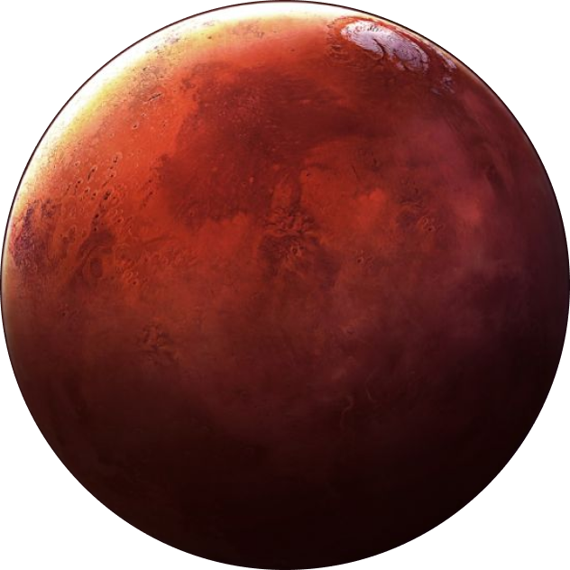
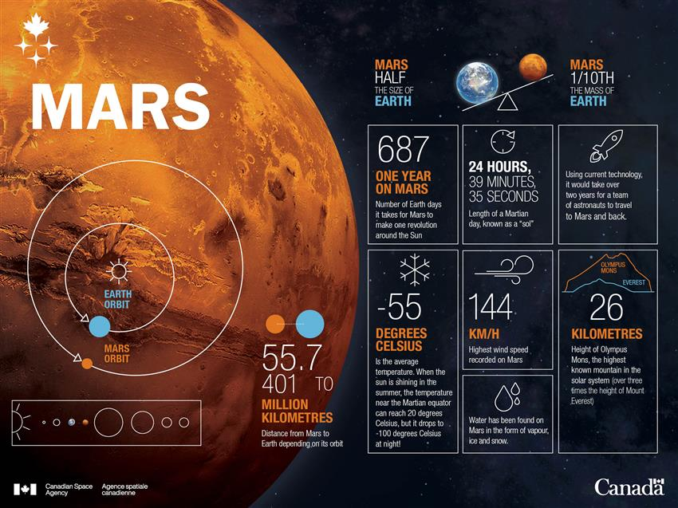

Facts

About
Discovery: Mars has been known since ancient times, with
telescopic observations beginning in the 1600s by Galileo.
Name: It’s named after the Roman god of war due to its red color,
which resembles blood.
Size & Orbit: Mars is about half the size of Earth, with a
diameter of 6,779 km. It orbits the Sun at 227.9 million km and
has seasons like Earth but longer.
Atmosphere: Very thin, mostly carbon dioxide, with little
protection from radiation.
Moons: Mars has two small moons, Phobos and Deimos, thought to be
captured asteroids.
Exploration: Mars has been studied since the 1960s. Notable
missions include NASA's Viking (1976), Curiosity Rover (2012), and
Perseverance Rover (2020).
Key Features: It has the tallest volcano, Olympus Mons, and the
longest canyon, Valles Marineris.
Search for Life: Evidence of water suggests Mars may have
supported microbial life in the past.
Mars Expeditions

As of 2025, Mars exploration is advancing rapidly. NASA's Perseverance rover, launched in 2021, is actively studying the Jezero Crater and collecting samples for future return to Earth. The rover is also searching for signs of ancient microbial life. Meanwhile, China's Tianwen-1 mission, including the Zhurong rover, is exploring the Utopia Planitia region, analyzing the planet's surface and atmosphere. Additionally, NASA’s Ingenuity helicopter, part of the Perseverance mission, has made several successful flights, marking the first powered flight on another planet. This milestone is crucial for future aerial exploration. Mars missions continue to focus on studying the planet's geology, climate, and potential for human exploration, with hopes for human landings in the 2030s.

5 Fun Facts

- Humanity is exploring the idea of settling on Mars. Elon Musk, the founder of SpaceX, has long shared his goal of creating a self-sustaining city on the planet. NASA also plans to send humans to Mars, starting with a mission to establish a human presence on the Moon by the 2030s and eventually landing astronauts on Mars in the 2040s.
- Mars is home to the largest volcano in the Solar System, Olympus Mons. Standing at 21 km tall, it’s about 2.5 times the height of Mount Everest.
- Mars' bigger moon, Phobos, is slowly getting closer to the planet, moving toward it by about 2 cm every year. In 50 million years, it could either crash into Mars or break apart and form a ring around the planet.
- A long time ago, Mars resembled Earth, with large bodies of liquid water covering much of its surface. There may have even been early life forms in its oceans. However, Mars eventually lost most of its atmosphere and became dry.
- In the late 1800s and early 1900s, astronomers believed they saw a network of canals on Mars. Some thought these were irrigation systems built by an alien civilization. But, it was later discovered that these canals were an optical illusion.